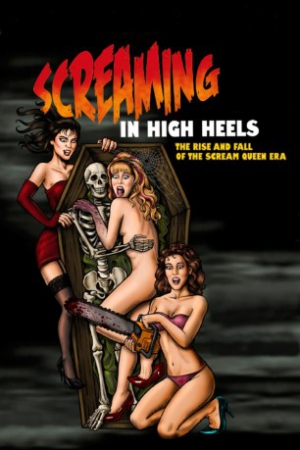

Country:United States, 63 minutes
Spoken languages:English
Genres:Documentary
Director(s):Jason Paul Collum
Writer(s):Jason Paul Collum
Video Codec:Unknown
Number: 2538


Certification:R
Storyline:
Three girls living in Los Angeles, CA in the 1980s found cult fame when they "accidentally" transitioned from models to B-movie actresses, coinciding with the major direct-to-video horror film boom of the era. Known as "The Terrifying Trio," Linnea Quigley (The Return of the Living Dead), Brinke Stevens (The Slumber Party Massacre) and Michelle Bauer (The Tomb), headlined upwards of ten films per year, fending off men in rubber monster suits, pubescent teenage boys, and deadly showers. They joined together in campy cult films like Sorority Babes in the Slimeball Bowl-a-Rama (1988) and Nightmare Sisters (1987). They traveled all over the world, met President Reagan, and built mini-empires of trading cards, comic books, and model kits. Then it all came crashing down. This documentary remembers these actresses - and their most common collaborators - on how smart they were to play stupid
Cast:

Medium: Bluray,
Loaned: No
Aspect ratio: Unknown